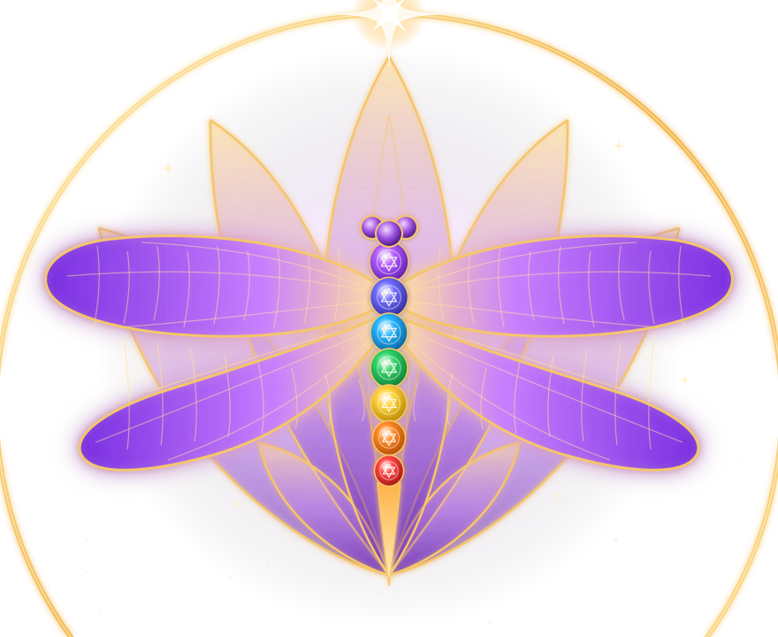
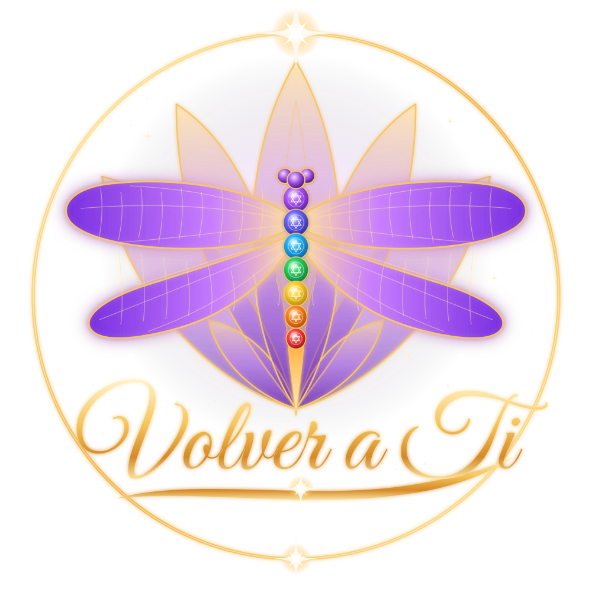

La libélula
Simboliza la transformación. Vive en el agua, despierta en el aire: nos recuerda que podemos cambiar sin dejar de ser quienes somos.

Volver a Ti Suscríbete
Un universo de paz y consciencia
Meditaciones guiadas, sueño profundo y el equilibrio de tus siete chakras. Un lugar para respirar, soltar y regresar a tu centro.
La esencia
Todo lo que buscas fuera
ya vive en tu interior.
Solo tienes que volver.
Simboliza la transformación. Vive en el agua, despierta en el aire: nos recuerda que podemos cambiar sin dejar de ser quienes somos.
Florece desde el barro hacia la luz. Es la calma que nace en medio de lo difícil, la pureza que no depende del entorno.
Siete centros de energía alineados de la raíz a la corona. Cuando fluyen en armonía, cuerpo, mente y espíritu vuelven a hablar el mismo idioma.
Sala de meditación
Seis experiencias de luz y sonido que se generan en tiempo real en tu pantalla. Elige una, ponte cómodo, activa el sonido y deja que la respiración marque el ritmo.
Para una experiencia completa usa auriculares: el sonido incluye pulsos binaurales suaves.
Mapa energético
Toca cada centro para descubrir su significado, su elemento, su mantra y una práctica sencilla para equilibrarlo.
En YouTube
Las meditaciones del canal se organizan en cinco series. Suscríbete para recibir cada viaje en cuanto se publique.
En directo 24 horas
Paisajes naturales, frecuencias sanadoras y la guía de respiración de Volver a Ti, sin interrupciones. Entra cuando lo necesites.
Estudio cinematográfico
La biblioteca visual del canal. Prompts profesionales listos para generar clips en Sora, Veo, Runway, Kling o Luma con la estética de Volver a Ti. Cópialos, genera y monta.
Únete a una comunidad que elige la calma, la consciencia y el amor propio como forma de vida.
Has vuelto a ti
Quédate un momento en este silencio.